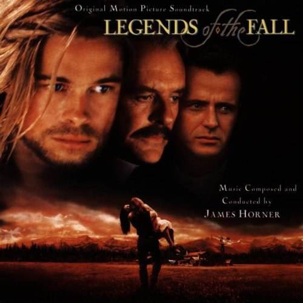

2016年5月
6 条
其中 6 条带正文
广播发布后不可编辑，所以每条都是那一刻的原话。
2016-05-30 16:30:28
读过 程序员健康指南 ★★★★☆
多了解了解医学，多了解了解本书所述的经验，那都是极好的～受益匪浅～
2016-05-27 11:11:35
 看过 伦敦陷落 / London Has Fallen ★★★★☆
看过 伦敦陷落 / London Has Fallen ★★★★☆
真刺激，看得爽！
2016-05-22 00:48:06
看过 北京遇上西雅图之不二情书 ★★★★☆
主线比较散，看着看着甚至觉得跑题了？不过老夫妻那个确实很抓人，中间几次含泪都是老夫老妻的，尤其是教堂的那一段。不知道我会不会有“去家千里兮，生无所归而死无以为坟”的一天，感觉还是蛮沉重的 _(:3」∠)_ 虽然结局是可遇不可求的浪漫～
2016-05-11 11:57:07
看过 霸王别姬 ★★★★★
做事儿只能自个儿成全自个儿……霸王别姬：英雄末路的悲壮情景……惋惜:-<
2016-05-10 15:42:11

The Ludlows 可以听一辈子
2016-05-10 11:13:17
 看过 燃情岁月 / Legends of the Fall ★★★★☆
看过 燃情岁月 / Legends of the Fall ★★★★☆
前面16:00 Susan弹钢琴那一段虽然是引出下文的，但是隐约感觉到故事的悲壮。配乐已经听了一年多了，才来看的电影。不给五星的原因，是中间那一段没看明白，为什么要离家出走？还有就是有些因为文化差异导致的不能理解，但是大部分处理的都很不错，音乐一响潸然泪下~